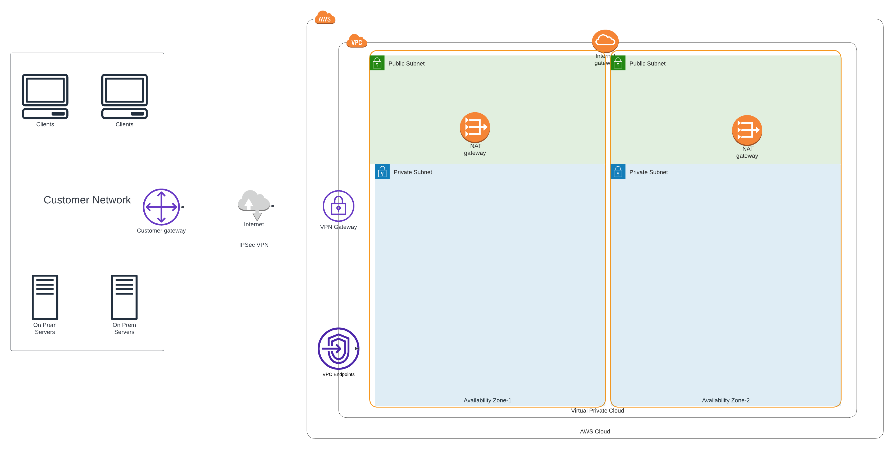

terraform-aws-ref-arch-network¶
Overview¶
AWS Terraform module for the SourceFuse Reference Architecture. We consider this module to be a high order module that is composed of smaller modules underneath. In most cases, we use open source modules to create our high order modules. Please see the reference documentation below for more information about the modules used under the hood.

Creates the following resources in a single region.
- VPC
- Multi-AZ private and public subnets
- Route tables, internet gateway, and NAT gateways
- Configurable VPN Gateway
- Configurable VPC Endpoints
Usage¶
See the example folder for a complete example.
Requirements¶
| Name | Version |
|---|---|
| terraform | ~> 1.3 |
| aws | >= 3.0.0, >= 4.0.0, >= 4.9.0 |
Providers¶
| Name | Version |
|---|---|
| aws | 4.49.0 |
Modules¶
Resources¶
| Name | Type |
|---|---|
| aws_dx_connection.this | resource |
| aws_vpn_gateway.this | resource |
Inputs¶
| Name | Description | Type | Default | Required |
|---|---|---|---|---|
| assign_generated_ipv6_cidr_block | When true, assign AWS generated IPv6 CIDR block to the VPC. Conflicts with ipv6_ipam_pool_id. |
bool |
true |
no |
| availability_zones | List of availability zones to deploy resources in. | list(string) |
n/a | yes |
| default_network_acl_deny_all | When true, manage the default network acl and remove all rules, disabling all ingress and egress.When false, do not mange the default networking acl, allowing it to be managed by another component. |
bool |
false |
no |
| default_route_table_no_routes | When true, manage the default route table and remove all routes, disabling all ingress and egress.When false, do not mange the default route table, allowing it to be managed by another component.Conflicts with Terraform resource aws_main_route_table_association. |
bool |
false |
no |
| default_security_group_deny_all | When true, manage the default security group and remove all rules, disabling all ingress and egress.When false, do not manage the default security group, allowing it to be managed by another component. |
bool |
true |
no |
| direct_connect_bandwidth | The bandwidth of the connection. Valid values for dedicated connections: 1Gbps, 10Gbps. Valid values for hosted connections: 50Mbps, 100Mbps, 200Mbps, 300Mbps, 400Mbps, 500Mbps, 1Gbps, 2Gbps, 5Gbps, 10Gbps and 100Gbps. Case sensitive. |
string |
"10Gbps" |
no |
| direct_connect_enabled | Enable direct connect. | bool |
false |
no |
| direct_connect_encryption_mode | The connection MAC Security (MACsec) encryption mode. MAC Security (MACsec) is only available on dedicated connections. Valid values are no_encrypt, should_encrypt, and must_encrypt. | string |
"must_encrypt" |
no |
| direct_connect_location | The location of AWS Direct Connect. Use aws directconnect describe-locations for the list of AWS Direct Connect locations. Use locationCode for the value. |
string |
null |
no |
| direct_connect_provider | The name of the service provider associated with the connection. | string |
null |
no |
| direct_connect_request_macsec | Boolean value indicating whether you want the connection to support MAC Security (MACsec). MAC Security (MACsec) is only available on dedicated connections. Changing this value will cause the resource to be destroyed and re-created. See MACsec prerequisites for more information. |
bool |
false |
no |
| direct_connect_skip_destroy | et to true if you do not wish the connection to be deleted at destroy time, and instead just removed from the Terraform state. | bool |
false |
no |
| dns_hostnames_enabled | Set true to enable DNS hostnames in the VPC |
bool |
true |
no |
| dns_support_enabled | Set true to enable DNS resolution in the VPC through the Amazon provided DNS server |
bool |
true |
no |
| environment | Name of the environment, i.e. dev, stage, prod | string |
n/a | yes |
| gateway_vpc_endpoints | A map of Gateway VPC Endpoints to provision into the VPC. This is a map of objects with the following attributes: - name: Short service name (either "s3" or "dynamodb")- policy = A policy (as JSON string) to attach to the endpoint that controls access to the service. May be null for full access.- route_table_ids: List of route tables to associate the gateway with. Routes to the gatewaywill be automatically added to these route tables. |
map(object({ |
{} |
no |
| interface_vpc_endpoints | A map of Interface VPC Endpoints to provision into the VPC. This is a map of objects with the following attributes: - name: Simple name of the service, like "ec2" or "redshift"- policy: A policy (as JSON string) to attach to the endpoint that controls access to the service. May be null for full access.- private_dns_enabled: Set true to associate a private hosted zone with the specified VPC- security_group_ids: The ID of one or more security groups to associate with the network interface. The firstsecurity group will replace the default association with the VPC's default security group. If you want to maintain the association with the default security group, either leave security_group_ids empty orinclude the default security group ID in the list. - subnet_ids: List of subnet in which to install the endpoints. |
map(object({ |
{} |
no |
| internet_gateway_enabled | Set true to create an Internet Gateway for the VPC |
bool |
true |
no |
| ipv6_egress_only_internet_gateway_enabled | Set true to create an IPv6 Egress-Only Internet Gateway for the VPC |
bool |
false |
no |
| namespace | Namespace of the project, i.e. refarch | string |
n/a | yes |
| tags | Default tags to apply to every resource | map(string) |
n/a | yes |
| vpc_endpoints_enabled | Enable VPC endpoints. | bool |
false |
no |
| vpc_ipv4_primary_cidr_block | IPv4 CIDR block for the VPC to use. | string |
n/a | yes |
| vpn_gateway_enabled | Enable VPN Gateway. | bool |
false |
no |
Outputs¶
| Name | Description |
|---|---|
| default_route_table_id | The Default Route Table ID for the VPC |
| main_route_table_id | The Main Route Table ID for the VPC |
| private_subnet_cidrs | Private subnet CIDRs |
| private_subnet_ids | Private subnet IDs |
| public_subnet_cidrs | Public subnet CIDRs |
| public_subnet_ids | Public subnet IDs |
| vpc_cidr | The VPC CIDR block |
| vpc_id | The VPC ID |
Development¶
Prerequisites¶
Configurations¶
- Configure pre-commit hooks
- Configure golang deps for tests
Tests¶
- Tests are available in
testdirectory - In the test directory, run the below command
Authors¶
This project is authored by: - SourceFuse